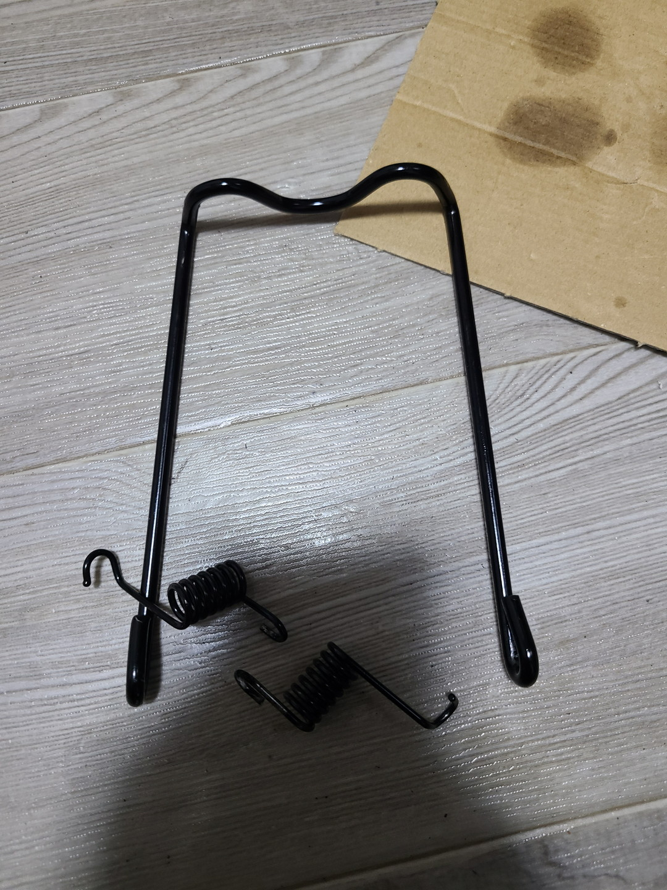
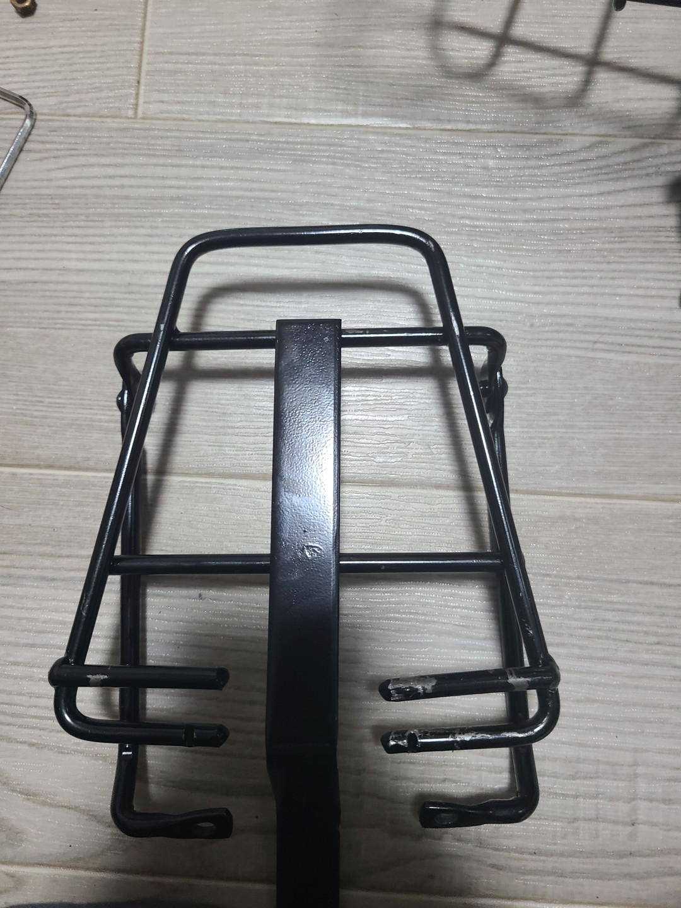
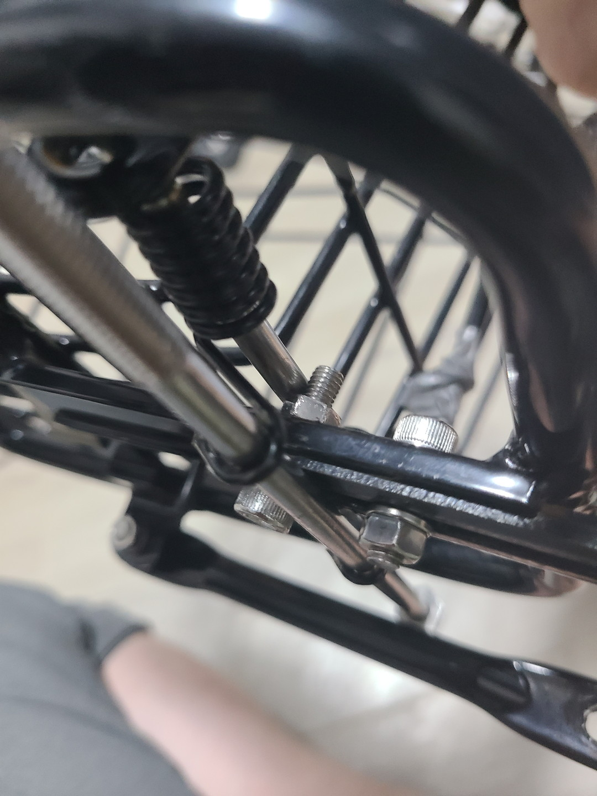
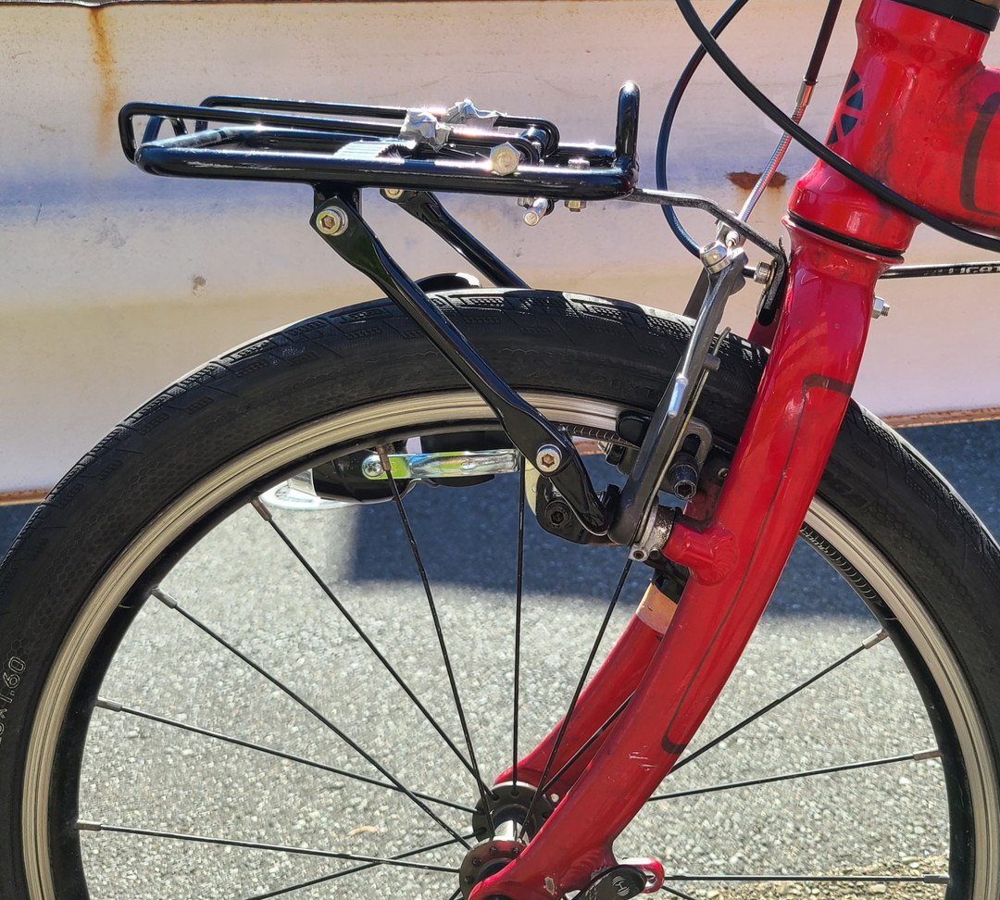
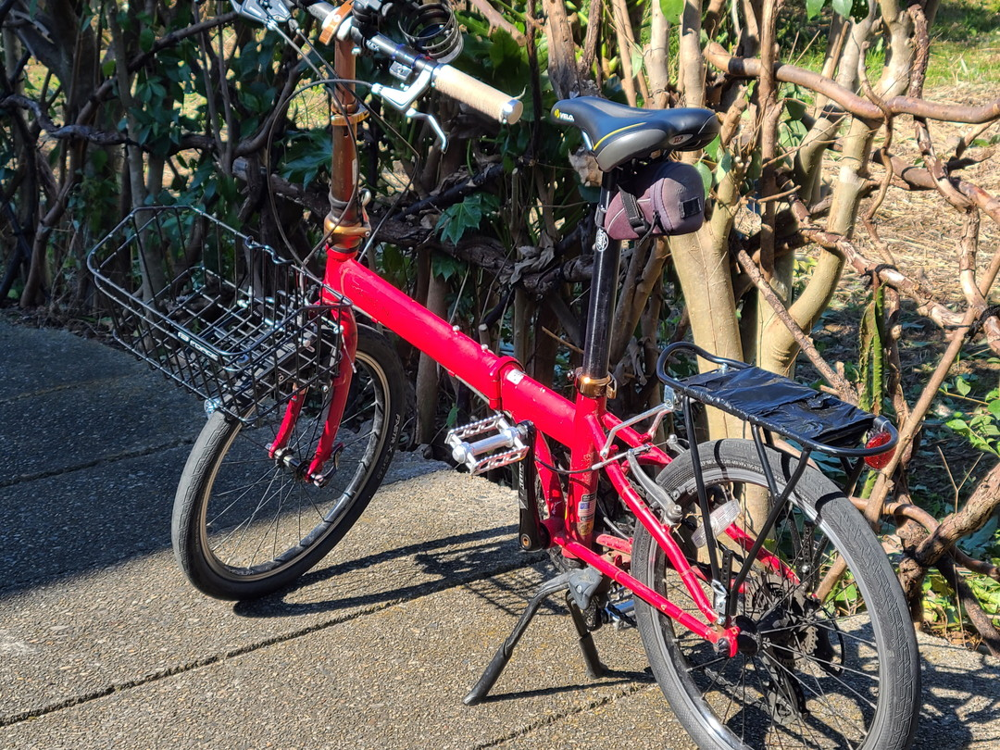
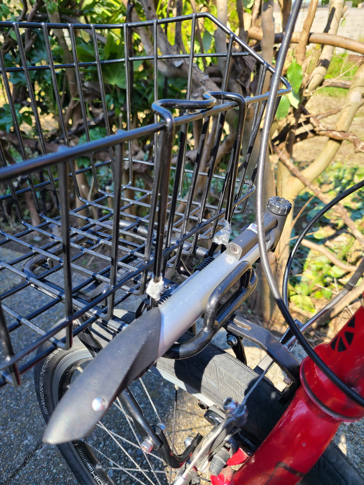
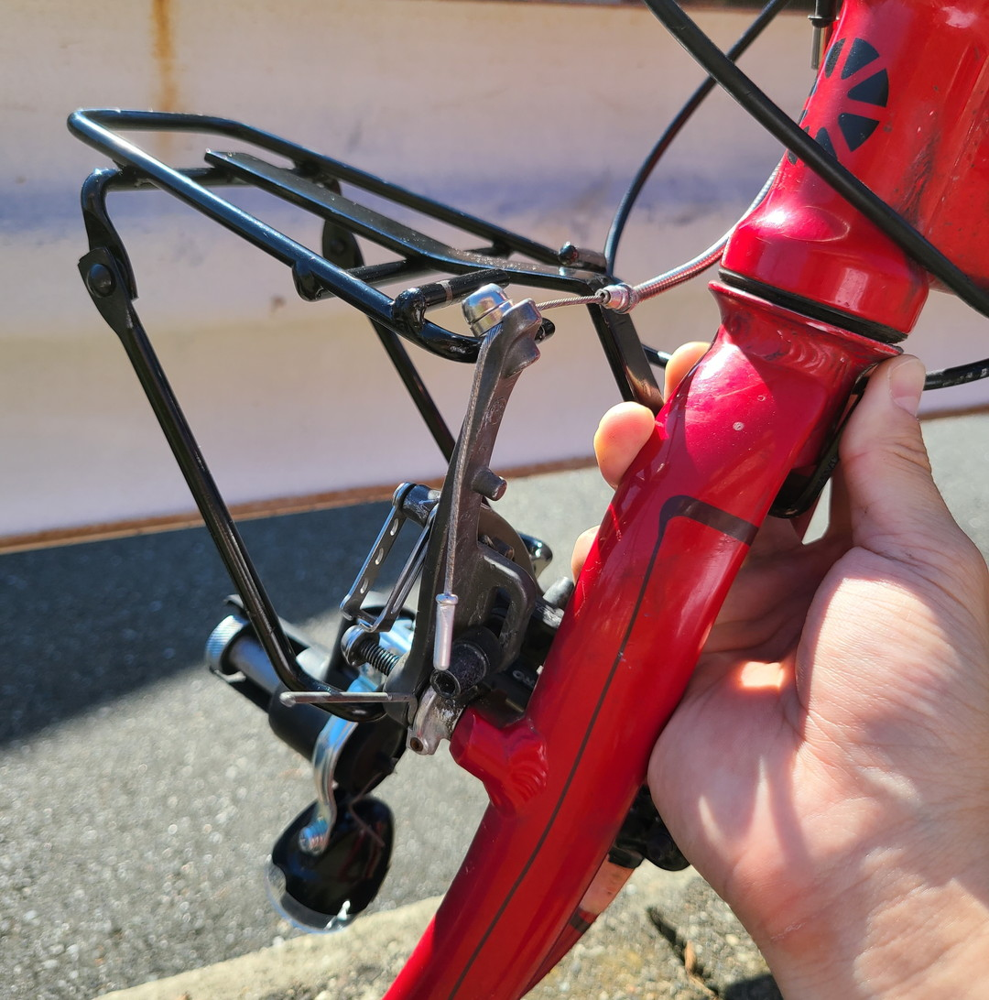

フロントキャリア改造
前回の続きで取り付けたキャリアの問題の解決策をどうにか考えてみた。 正直結論から言うと元々つけてたキャリアにバスケット固定装置を移設することにした。
なので全く当てにならない。正直価格を考えると前回の記事で紹介した20インチ用のワンタッチバスケットを使ったほうがいいと思う。それでも一度移設できれば他のキャリアにしたときも使い回せる可能性があるのでやったことをつらつら書いていく。
スプリングと固定用ステーの取り外し

ごり押しでスプリングを外す。糸ノコでステーを切断しても良かったけれどもしも移設に失敗したときに戻せるようにしたかったため、マイナスドライバーをガシガシして外した。後で友人から聞いた話だがスプリングは外すための工具が存在しているらしい（バイク用品らしいが）。

スプリングが固定されていた部分の寸法を測り、とりあえずAkiWordのキャリアに2本の金属棒を挟ませて移行させることにした。

最終的にできたのがこれ。キャリア真ん中のステー固定ボルトを逆さにつけてストッパー代わりにし、下の金属棒を後ろにずらすことでスプリングがうまく機能するようにさせた。ただ負荷が集中しそうなのでそのうち改善しないといけなさそうだ。
設置
あとはただポン付けするだけなので特段言うことがない。ただ、これに限らずVブレーキの穴を利用してつけるタイプのキャリアはボルトのサイズを入れ替えて長くし、ワッシャーを噛ませておかないとブレーキが効かなくなったり、ボルトが抜け落ちたりするので注意が必要だ。

スプリングとバスケット固定用のステーをダクトテープで補強したのでちょっと見てくれが悪いが割りとスマートに収まった。（ついでにサビサビだったボルト一式をステンレスに入れ替えた。）

バスケットの着脱も普通にできた。

ワイヤー部分の窮屈さもなくなり、空いたスペースに携帯ポンプでも置けそうだ。
問題点
1.バスケットを外すとバスケット固定用ステーが動いてうるさい。
これはベルクロで固定するかゴムテープで太さを調整するなどの工夫で解決した。
2.重い荷物でバスケットがずれる。
Force付属のキャリアは台形になっていて前方が動きにくかったが、AkiWordのキャリアは長方形のためずれやすくなってる。ただ、実際はForce純粋のときにもずれたのでワンタッチキャリアの宿命かもしれない。これは一応ベルクロで応急処置はできるはず。
3.フロントが出ずっぱりになった
だいぶ前に突出したので重いものを入れると怖い。そもそもどっちにしろマックス3kgなんだから入れるなよって話なんだけれど。
おまけ
一応Force純正をそのまま使うならどうするかを考えてみたが、真ん中のステーを上方向に曲げることくらいしか解決策がなかった。

だいたいこんな感じにすれば使えるはず。ただリュックサックを収納するとハンドルポストやワイヤー類に干渉しそうだ。もの好きな人がいたらぜひためしてくれ。ではまた～。